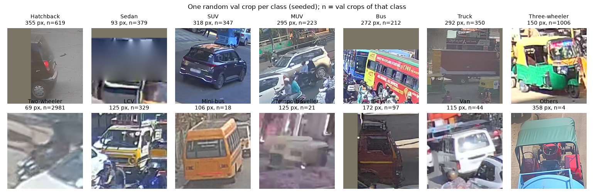
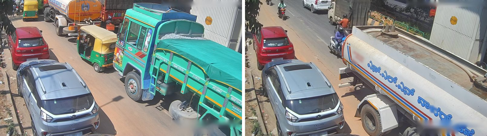
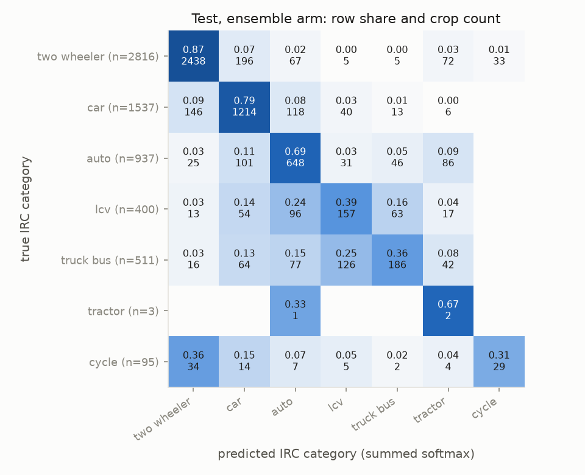
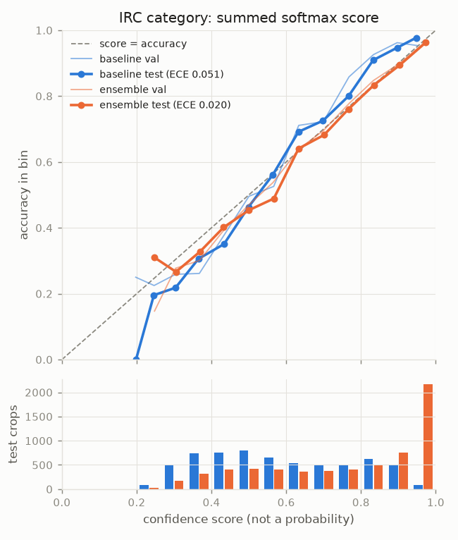
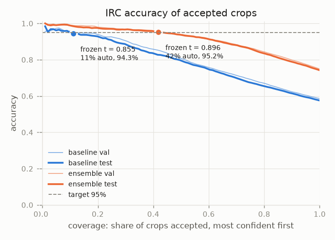
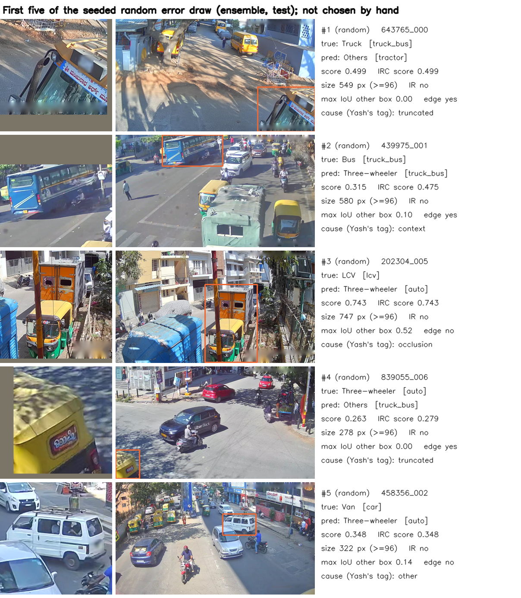

Green time at a junction is set from approach demand in Passenger Car Units (PCU, IRC:106-1990): a truck or bus weighs {{pcu_factor.truck_bus:f2}} cars, an auto-rickshaw {{pcu_factor.auto:f1}}, a two-wheeler {{pcu_factor.two_wheeler:f2}}. Assignment 1 met this need with a detector fine-tuned on labelled frames. A new camera has no labels. This project asks whether a frozen vision-language model can name each vehicle from words alone, well enough for PCU, and whether its own score can say which vehicles a person must check. Boxes are the dataset's ground-truth boxes, so only classification is measured; per-frame PCU is the sum of the factors of the predicted IRC categories.
Why Track C, and not A or B. The constraint at a new junction is the camera, not the model: on the day it goes up there is not one labelled frame from it. Track A compares a ViT with a CNN, but both still need a labelled training set, which is exactly what this camera lacks, and Assignment 1 already measured what labelled training buys on these frames. Track B generates images, and a synthetic traffic scene says nothing about how many trucks crossed this junction this morning. Only a vision-language model can be told what a class is in words, so Track C is the one track whose question is the deployment question: how far does a frozen model get with no labels, and can its own score tell me which vehicles still need a person?
Source. UVH-26 (IISc AIM with Bengaluru Traffic Police; CC BY 4.0; Hub revision 59f82c5): 1920×1080 frames from Bengaluru Safe City cameras, captured February 2025, 14 classes, STAPLE (ST) consensus boxes. Split. Assignment 1's pseudo-camera split, reused unchanged and checksum-verified (sha256 f8181d24…): val {{split.val_images:int}} images ({{split.val_groups:int}} pseudo-cameras), test {{split.test_images:int}} ({{split.test_groups:int}}), {{split.groups_shared_val_test:int}} pseudo-cameras in both. After dropping {{data.test.exact_duplicates_dropped:int}} exact duplicate boxes per split, val has {{data.val.crops:int}} crops and test {{data.test.crops:int}}. Each crop is a square around the box with 10% context, padded with CLIP's mean pixel. Mini-bus, Tempo-traveller and Others have fewer than 30 test crops and are left out of the headline macro-F1.
What the model has seen. CLIP ViT-B/16 was trained on 400M web image–text pairs collected before 2021; these frames were captured in 2025 and published after, so the test images themselves cannot be in its training data. Captioned Indian street photos ("auto-rickshaw", "Tata Ace") very likely are, which is what zero-shot relies on. Within the project, prompts and the review threshold were tuned on val only. A by-eye audit of {{leak.n:int}} seeded random test images against their most similar val image found {{leak.same_camera:int}} same-camera pairs: val–test camera overlap ≈ {{leak.leakage_estimate:pct0}} (95% CI {{leak.ci95.lo:pct0}}–{{leak.ci95.hi:pct0}}). Gradient-thumbnail similarity misses some of them (Figure 2), so the audit, not a threshold count, is the estimate. Prompts were written from the class definitions and revised at most twice, so this overlap can flatter test only slightly.


openai/clip-vit-base-patch16, revision 57c2164 (pinned in code and printed in the notebook), fp32 on CPU, used as published: CLIP's own processor, L2-normalised embeddings, logits = CLIP's logit scale (100) × cosine, softmax over the 14 class prompts, prediction = argmax. Nothing is fine-tuned, no temperature is fitted. Baseline prompt: "a photo of a {class name}.". For PCU, the IRC category is the one with the highest summed softmax over its classes, and that sum is the IRC score; this rule was fixed on val before test. The argmax→category version is reported as a secondary column.
The ensemble arm changes only the text: per class, it averages the text embeddings of six camera-aware templates ("a CCTV image of {}", "a top-down traffic camera view of {}", …) × several descriptive names written from the dataset card's class table (e.g. Three-wheeler: "an auto-rickshaw", "a green and yellow auto-rickshaw"; Others: "an agricultural tractor", "a road roller"). Image embeddings are computed once and shared by both arms; the notebook asserts their hash is identical. Design used val only, with at most two revisions, and the baseline's val confusion was already known when the first version was written. The version with the best val IRC accuracy was frozen by sha256 before test was opened:
| Val ({{data.val.crops:int}} crops) | baseline | v1 | v2 (frozen) | v3 |
|---|---|---|---|---|
| IRC accuracy | {{prompt_log.baseline.irc_accuracy:f3}} | {{prompt_log.v1.irc_accuracy:f3}} | {{prompt_log.v2.irc_accuracy:f3}} | {{prompt_log.v3.irc_accuracy:f3}} |
| PCU MAE per frame (argmax class) | {{prompt_log.baseline.pcu_mae:f2}} | {{prompt_log.v1.pcu_mae:f2}} | {{prompt_log.v2.pcu_mae:f2}} | {{prompt_log.v3.pcu_mae:f2}} |
Test was opened only after the prompts and threshold were frozen. The notebook's fresh-kernel run re-scores it with the same files and reproduces the first opening's image embeddings exactly. Intervals are 95% paired percentile bootstrap over pseudo-camera groups ({{test.bootstrap.resamples:int}} resamples, seed {{seed:int}}).
| Val baseline | Val ensemble | Test baseline | Test ensemble | Test difference (95% CI) | |
|---|---|---|---|---|---|
| 14-class accuracy | {{val.baseline.accuracy:f3}} | {{val.ensemble.accuracy:f3}} | {{test.baseline.accuracy:f3}} [{{test.baseline.ci95.accuracy.lo:f3}}, {{test.baseline.ci95.accuracy.hi:f3}}] | {{test.ensemble.accuracy:f3}} [{{test.ensemble.ci95.accuracy.lo:f3}}, {{test.ensemble.ci95.accuracy.hi:f3}}] | {{test.diff.accuracy.lo:sf3}} to {{test.diff.accuracy.hi:sf3}} |
| Balanced accuracy | {{val.baseline.balanced_accuracy:f3}} | {{val.ensemble.balanced_accuracy:f3}} | {{test.baseline.balanced_accuracy:f3}} | {{test.ensemble.balanced_accuracy:f3}} | |
| Macro-F1 (11 classes ≥ 30 crops) | {{val.baseline.macro_f1_headline:f3}} | {{val.ensemble.macro_f1_headline:f3}} | {{test.baseline.macro_f1_headline:f3}} [{{test.baseline.ci95.macro_f1_headline.lo:f3}}, {{test.baseline.ci95.macro_f1_headline.hi:f3}}] | {{test.ensemble.macro_f1_headline:f3}} [{{test.ensemble.ci95.macro_f1_headline.lo:f3}}, {{test.ensemble.ci95.macro_f1_headline.hi:f3}}] | {{test.diff.macro_f1_headline.lo:sf3}} to {{test.diff.macro_f1_headline.hi:sf3}} |
| IRC accuracy (summed) | {{val.baseline.irc_accuracy:f3}} | {{val.ensemble.irc_accuracy:f3}} | {{test.baseline.irc_accuracy:f3}} [{{test.baseline.ci95.irc_accuracy.lo:f3}}, {{test.baseline.ci95.irc_accuracy.hi:f3}}] | {{test.ensemble.irc_accuracy:f3}} [{{test.ensemble.ci95.irc_accuracy.lo:f3}}, {{test.ensemble.ci95.irc_accuracy.hi:f3}}] | {{test.diff.irc_accuracy.lo:sf3}} to {{test.diff.irc_accuracy.hi:sf3}} |
| IRC accuracy, argmax class (secondary) | {{val.baseline.irc_accuracy_from_class_argmax:f3}} | {{val.ensemble.irc_accuracy_from_class_argmax:f3}} | {{test.baseline.irc_accuracy_from_class_argmax:f3}} | {{test.ensemble.irc_accuracy_from_class_argmax:f3}} | |
| PCU MAE per frame | {{val.baseline.pcu.pcu_mae:f2}} | {{val.ensemble.pcu.pcu_mae:f2}} | {{test.baseline.pcu.pcu_mae:f2}} [{{test.baseline.ci95.pcu_mae.lo:f2}}, {{test.baseline.ci95.pcu_mae.hi:f2}}] | {{test.ensemble.pcu.pcu_mae:f2}} [{{test.ensemble.ci95.pcu_mae.lo:f2}}, {{test.ensemble.ci95.pcu_mae.hi:f2}}] | {{test.diff.pcu_mae.lo:sf2}} to {{test.diff.pcu_mae.hi:sf2}} |
| as share of mean demand; bias | {{val.baseline.pcu.pcu_rel_mae:pct1}}; {{val.baseline.pcu.pcu_bias:sf2}} | {{val.ensemble.pcu.pcu_rel_mae:pct1}}; {{val.ensemble.pcu.pcu_bias:sf2}} | {{test.baseline.pcu.pcu_rel_mae:pct1}}; {{test.baseline.pcu.pcu_bias:sf2}} | {{test.ensemble.pcu.pcu_rel_mae:pct1}}; {{test.ensemble.pcu.pcu_bias:sf2}} | |
| PCU MAE, argmax class (secondary) | {{val.baseline.pcu_argmax.pcu_mae:f2}} | {{val.ensemble.pcu_argmax.pcu_mae:f2}} | {{test.baseline.pcu_argmax.pcu_mae:f2}} | {{test.ensemble.pcu_argmax.pcu_mae:f2}} |
Finding: the prompt change alone is a large, robust gain. On unseen cameras the ensemble names the IRC category of {{test.ensemble.irc_accuracy:pct1}} of vehicles against {{test.baseline.irc_accuracy:pct1}}, and cuts the per-frame PCU error from {{test.baseline.pcu.pcu_mae:f2}} to {{test.ensemble.pcu.pcu_mae:f2}} ({{test.ensemble.pcu.pcu_rel_mae:pct1}} of demand); every bootstrap resample favours it. The baseline over-counts demand (bias {{test.baseline.pcu.pcu_bias:sf2}} PCU per frame), so its errors push vehicles into heavier categories. Val and test agree closely for both arms, so tuning the prompts on val did not over-fit it.
Where accuracy is lost (Figure 3). Cars, two-wheelers and autos are mostly right. Trucks and buses are the weak category, mostly called LCVs or autos, and LCVs are often called cars. Car subtypes are confused with each other (14-class accuracy {{test.ensemble.accuracy:pct1}}), which costs nothing in PCU.
What labelled training bought (reference, not a baseline): Assignment 1's fine-tuned YOLOv8 on the same test frames reached PCU MAE {{a1.pcu_mae:f2}} per frame ({{a1.pcu_rel_mae:pct1}} of demand). That figure includes its detection errors and ours does not, so the two are not directly comparable.

The score is a softmax value (14-class) or its sum over a category (IRC). It is not a probability: whether it tracks correctness is measured, not assumed. With the ensemble prompts it does track correctness (Figure 4): test ECE of the IRC score is {{test.ensemble.irc.ece:f3}} ({{test.ensemble.irc.ece_equal_mass:f3}} with equal-mass bins), against {{test.baseline.irc.ece:f3}} for the baseline. The coverage curve shows accuracy rising steadily as the threshold rises.


The review rule. A crop is accepted without review if its IRC score ≥ t; t is the lowest threshold at which accepted val crops reach 95% IRC accuracy (target set before test), frozen on val for both arms.
| Review rule on test | t (val) | Accepted without review | Accepted IRC accuracy (95% CI) | Accepted 14-class acc. | Sent to a person | PCU MAE before → after review |
|---|---|---|---|---|---|---|
| Baseline | {{test.baseline.rule.threshold:f4}} | {{test.baseline.rule.coverage:pct1}} | {{test.baseline.rule.accepted_irc_accuracy:pct1}} [{{test.baseline.ci95.accepted_irc_accuracy.lo:pct1}}, {{test.baseline.ci95.accepted_irc_accuracy.hi:pct1}}] | {{test.baseline.rule.accepted_class_accuracy:pct1}} | {{test.baseline.rule.human_workload:pct1}} | {{test.baseline.rule.pcu_mae_before_review:f2}} → {{test.baseline.rule.pcu_mae_after_review:f2}} |
| Ensemble | {{test.ensemble.rule.threshold:f4}} | {{test.ensemble.rule.coverage:pct1}} | {{test.ensemble.rule.accepted_irc_accuracy:pct1}} [{{test.ensemble.ci95.accepted_irc_accuracy.lo:pct1}}, {{test.ensemble.ci95.accepted_irc_accuracy.hi:pct1}}] | {{test.ensemble.rule.accepted_class_accuracy:pct1}} | {{test.ensemble.rule.human_workload:pct1}} | {{test.ensemble.rule.pcu_mae_before_review:f2}} → {{test.ensemble.rule.pcu_mae_after_review:f2}} |
The ensemble rule held its target on unseen cameras: {{test.ensemble.rule.coverage:pct1}} of crops (val {{val.ensemble.rule.coverage:pct1}}) need no person, at {{test.ensemble.rule.accepted_irc_accuracy:pct1}} IRC accuracy. The baseline's rule was fragile on val (its coverage curve hovers near 95% at low coverage) and on test accepts {{test.baseline.rule.coverage:pct1}} at {{test.baseline.rule.accepted_irc_accuracy:pct1}} IRC accuracy, below the 95% target. The rule targets IRC categories, so accepted crops are right at the 14-class level only {{test.ensemble.rule.accepted_class_accuracy:pct1}} of the time; per-class counts of car subtypes are not promised. {{test.ensemble.rule.accepted_irc_accuracy:pct1}} is likely an underestimate: in the seeded draw of 10 accepted errors, {{fail.tags.confident.label:int}} are label errors where CLIP is right (Section 7), so label noise in the accepted set mostly counts against CLIP, though noise can cut both ways (a wrong label can also make a wrong prediction look right).
Draw. With the project seed, 30 errors were drawn at random from all {{fail.class_errors:int}} 14-class test errors of the ensemble, then 10 from the {{fail.accepted_irc_wrong:int}} errors the review rule lets through (IRC score ≥ t, IRC wrong). None was chosen by hand. Each was tagged with one cause from the crop and its frame (tags judged by Claude at my request and reviewed by me).
| Cause | Random 30 | Accepted 10 |
|---|---|---|
| Occlusion by another vehicle | {{fail.tags.random.occlusion:int}} | {{fail.tags.confident.occlusion:int}} |
| Small (long side < 96 px) | {{fail.tags.random.small:int}} | {{fail.tags.confident.small:int}} |
| Look-alike class | {{fail.tags.random.lookalike:int}} | 0 |
| A neighbour fills the crop | {{fail.tags.random.context:int}} | {{fail.tags.confident.context:int}} |
| Cut by the frame edge | {{fail.tags.random.truncated:int}} | {{fail.tags.confident.truncated:int}} |
| IR / night frame | {{fail.tags.random.ir_night:int}} | 0 |
| Label error (CLIP right) | {{fail.tags.random.label:int}} | {{fail.tags.confident.label:int}} |
| Other | {{fail.tags.random.other:int}} | 0 |
| All {{test.crops:int}} test crops | Crops | IRC error rate |
|---|---|---|
| Overlap with another box: IoU 0 | {{fail.pattern.occlusion_iou.0.crops:int}} | {{fail.pattern.occlusion_iou.0.irc_error_rate:pct1}} |
| IoU ≥ 0.3 | {{fail.pattern.occlusion_iou.>=0.3.crops:int}} | {{fail.pattern.occlusion_iou.>=0.3.irc_error_rate:pct1}} |
| Inside the frame | {{fail.pattern.frame_edge.inside frame.crops:int}} | {{fail.pattern.frame_edge.inside frame.irc_error_rate:pct1}} |
| within 3 px of the frame edge | {{fail.pattern.frame_edge.touches edge.crops:int}} | {{fail.pattern.frame_edge.touches edge.irc_error_rate:pct1}} |
| Long side ≥ 96 px | {{fail.pattern.size_bin.>=96.crops:int}} | {{fail.pattern.size_bin.>=96.irc_error_rate:pct1}} |
| 32–95 px | {{fail.pattern.size_bin.32-95.crops:int}} | {{fail.pattern.size_bin.32-95.irc_error_rate:pct1}} |
| True class Truck | {{fail.pattern.true_class.Truck.crops:int}} | {{fail.pattern.true_class.Truck.irc_error_rate:pct1}} |

The pattern: CLIP names whatever fills the crop, not the vehicle the box is about. When the boxed vehicle is partly hidden, shares the crop with a neighbour, is cut by the frame edge or is too small to see, CLIP answers for the dominant object instead. {{fail.tags.random.fills_crop:int}} of the 30 random errors are of this kind, and the same conditions raise the error rate across all {{test.crops:int}} test crops, not only the drawn ones: IRC error is {{fail.pattern.occlusion_iou.0.irc_error_rate:pct1}} with no overlap and {{fail.pattern.occlusion_iou.>=0.3.irc_error_rate:pct1}} at IoU ≥ 0.3, {{fail.pattern.frame_edge.touches edge.irc_error_rate:pct1}} at the frame edge, and {{fail.pattern.size_bin.32-95.irc_error_rate:pct1}} for 32–95 px crops. Trucks suffer most because they are big: they are rarely fully in view, so CLIP sees a cabin, a load or the auto beside them and calls it an LCV, an auto or a car.
Trucks are the costliest class for PCU: {{fail.pattern.true_class.Truck.irc_error_rate:pct1}} of trucks get the wrong IRC category. They are {{pcu_mass.Truck.crop_share:pct1}} of crops but carry {{pcu_mass.Truck.share:pct1}} of all per-crop PCU error ({{pcu_mass.Truck.abs:f0}} of {{pcu_mass.total_abs:f0}} PCU), almost all of it under-count (net {{pcu_mass.Truck.net:sf0}}): a truck ({{pcu_factor.truck_bus:f2}}) read as an LCV ({{pcu_factor.lcv:f2}}), auto ({{pcu_factor.auto:f1}}) or car ({{pcu_factor.car:f1}}). The review rule does not catch them: {{accepted.Truck.irc_wrong:int}} of the {{accepted.Truck.crops:int}} trucks it accepts are wrong. This weakness was already visible on val before test was opened.
Label noise. Some vehicles carry two ST boxes with different classes at IoU ≥ 0.99 (STAPLE double labels): {{dup.test.groups:int}} groups, {{dup.test.crops_in_groups:int}} test crops ({{dup.test.share:pct1}}); Figure 1's Bicycle is one. As a secondary check defined after test was opened (headline unchanged), excluding these crops moves the ensemble to accuracy {{dup.ensemble.excl.accuracy:f3}}, IRC accuracy {{dup.ensemble.excl.irc_accuracy:f3}}, PCU MAE {{dup.ensemble.excl.pcu_mae:f2}} and accepted IRC accuracy {{dup.ensemble.excl.accepted_irc_accuracy:pct1}}. Assignment 1's labels carry the same duplicates.
Risk in this system. CLIP matches images against any text. The same pipeline on city cameras could be asked for a person ("a woman in a red saree riding a scooter") instead of a vehicle class, turning a counting tool into a search tool for individuals; the frames also show faces and number plates. Mitigations implemented. (1) Closed vocabulary: classifiers are built only from prompt files registered by sha256, and the notebook shows a free-text prompt file being refused. (2) Image embeddings stay in memory in the notebook run and no embedding file is written (asserted); outputs are per-crop class, score and per-frame counts. (3) Every figure with pixels passes a face blur (OpenCV Haar) plus manual boxes, and each was checked by eye. Costed, not built: a number-plate detector (one more model with its own misses).
Judgement. The closed vocabulary protects against misuse of this code, not of CLIP: anyone with the public weights can type free text, so the real safeguard is control over who may run models on city cameras, not my sha check. What I can control is what the system keeps and shows. It stores counts, not embeddings, and the person who reviews the {{test.ensemble.rule.human_workload:pct0}} of crops it does not accept should see one vehicle crop, never the whole frame. Errors are not neutral either: under-counted trucks shorten green time on freight-heavy approaches, so truck counts should come from a person or a labelled detector before this is used to set signals.
With one change, the prompts, on the same frozen image features, CLIP went from unusable for PCU ({{test.baseline.pcu.pcu_mae:f2}} PCU error per frame, {{test.baseline.pcu.pcu_rel_mae:pct1}} of demand) to {{test.ensemble.pcu.pcu_mae:f2}} ({{test.ensemble.pcu.pcu_rel_mae:pct1}}) on cameras it was never tuned on, and its score became reliable enough to route work: {{test.ensemble.rule.coverage:pct1}} of vehicles can be accepted with no person at {{test.ensemble.rule.accepted_irc_accuracy:pct1}} IRC accuracy, a figure that label noise probably understates. That is what I would run at a new camera on day one: the ensemble with the frozen threshold, and a person for the rest. I would not promise truck and bus counts, which are wrong {{fail.pattern.true_class.Truck.irc_error_rate:pct0}} of the time and slip past the review rule, nor car-subtype counts. These results use ground-truth boxes, so a real deployment adds detection errors on top, and about {{leak.leakage_estimate:pct0}} of the test cameras also appear in val.
AI assistance. Claude (Anthropic), working through Claude Code, wrote the code in the repository, ran it on my machine, drafted the prompt files from the dataset card under my constraints, proposed analysis options, judged the leak-audit pairs, the 40 failure-cause tags and the remaining face detections by eye at my request (I reviewed them), and drafted the factual sections of this report from report/numbers.json. I chose the problem, the track and the reuse of Assignment 1's split, and made the decisions recorded in the decision log: the 95% IRC review target, the redaction method, the leak audit and its reported estimate, the prompt constraints and selection rule, the summed-softmax IRC rule, the frozen prompts, threshold and headline arm, and the duplicate-label check. The [YASH] sections (track choice, failure pattern, ethics judgement, conclusion) were drafted with Claude from my decisions and edited by me. No hosted API was used; no data left my machine except downloads from the Hugging Face Hub.
Dataset. A. Sharma et al. The Urban Vision Hackathon Dataset and Models: Towards Image Annotations and Accurate Vision Models for Indian Traffic. arXiv:2511.02563, 2025. CC BY 4.0. · A. Radford et al. Learning transferable visual models from natural language supervision (CLIP). ICML 2021. · S. K. Warfield, K. H. Zou, W. M. Wells. STAPLE. IEEE TMI 23(7), 2004. · Indian Roads Congress. IRC:106-1990.